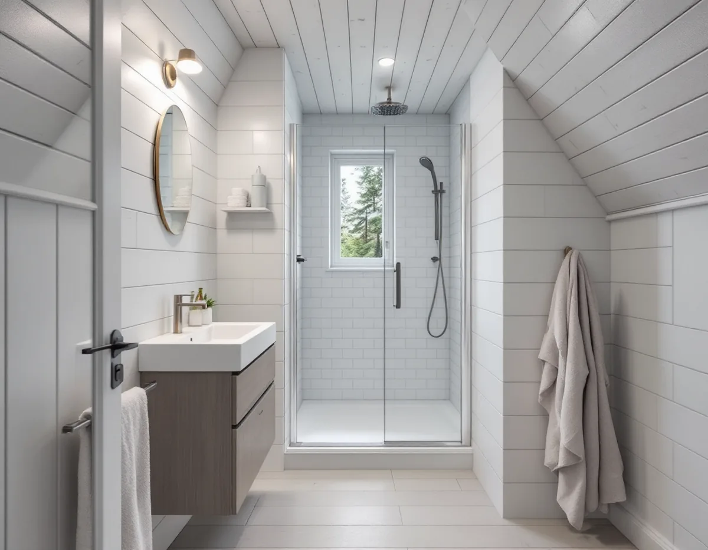
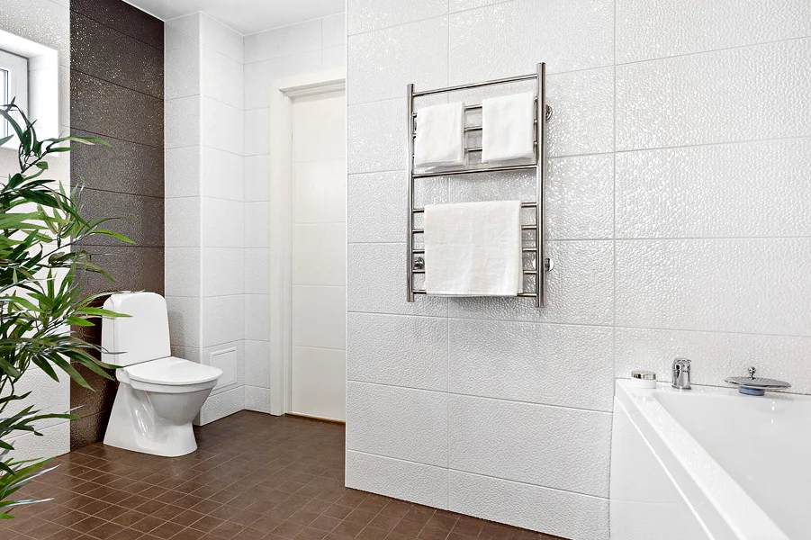

Besök och avloppsfrågan
Vi ser badrummet och tar reda på om huset har kommunalt avlopp eller en egen anläggning.

Badrumsrenovering i Huddinge kan betyda ett våtrum i ett egnahem i Stuvsta, ett 70-talsbadrum i ett grupphus i Skogås eller ett första riktiga badrum i en stuga vid Mellansjö.
Beskriv jobbet kort.
Något blev fel. Kontrollera uppgifterna eller ring 08 12 410 276.
Vi tittar på jobbet på plats innan du får offert.
Du ser vad som ingår och vad det kostar.
Vi drar av ROT direkt och sköter ansökan.
Geal Entreprenad AB, Bromma. Org.nr 559303-7566.

Vi river, bygger upp underlag och tätskikt och samordnar VVS och el – och vi börjar med att reda ut vart avloppet tar vägen.
Huddinges kulturmiljöprogram beskriver villabebyggelsen i lager. Först kom egnahemmen och villastäderna längs stambanan: Stuvsta och Hörningsnäs började byggas i början av 1900-talet, och på 1920-talet styckades Segeltorp och Snättringe till tomter. Husen har träpanel och sadeltak eller brutna tak, och i hus från den tiden har badrummet ofta tillkommit i efterhand, i källaren eller i ett rum som var tänkt för annat.
Under rekordåren och fram till början av 1980-talet byggdes grupphusområden som Sörskogen, Utsälje och de terränganpassade småhusen i Östra Skogås. Där fanns våtrummet med från början, och i ett hus som inte renoverats är tätskikt, golvbrunn och rör lika gamla som huset.
Det tredje lagret är sportstugorna vid sjöarna. Vid Mellansjö och Trehörningen byggdes stugor under 1910–30-talen, och vid Gömmarens södra stränder växte ett liknande område fram. Många stugor har permanentats och byggts till. Ett badrum i ett sådant hus är ofta det första riktiga våtrummet huset får, och då avgör avloppet mer än kaklet.
Det är Stockholm Vatten och Avfall som ansvarar för det kommunala vattnet i Huddinge, och enligt kommunens sida om VA-installationer är det byggherren som ska kontakta dem om något ska anslutas eller ändras. Saknar huset kommunalt avlopp ska du också höra av dig till kommunens miljötillsynsavdelning innan du gör ändringar.
För fritidshusområden skriver kommunen att den som vill använda en ny byggrätt, när ett område anpassas för permanentboende, måste ansluta sig till det allmänna nätet. Har du en godkänd enskild anläggning får du använda den till dess, men kommunen uppmanar dig att kontrollera att den klarar kraven för ditt hus. Vilka områden som ska anpassas ska stå i vattentjänstplanen, som enligt kommunen planeras att antas hösten 2026.
Ska en ny enskild anläggning byggas krävs ett skriftligt tillstånd innan arbetet börjar. Kommunen anger att det kan ta ungefär tio veckor från komplett ansökan till tillstånd. Planera därför badrummet och avloppet i samma tidplan, så att rummet inte står klart utan att vattnet har någonstans att ta vägen.
Ett stambyte där de nya stammarna läggs i samma läge behöver enligt kommunen ingen anmälan. Ska stammar dras i nya lägen, eller ska en anläggning för vatten och avlopp installeras eller ändras väsentligt, krävs anmälan och startbesked. Kommunen vill då ha en situationsplan, en planritning, ett förslag till kontrollplan och – om det tas upp hål i bärande delar – ett utlåtande från en konstruktör. Är du osäker på om ändringen är stor nog ber kommunen dig kontakta servicecenter.
Ventilationen har egna gränser. På kommunens sida om ventilation står att byte av fläkt eller don till likvärdiga normalt inte behöver anmälas, och inte heller ett byte från självdrag till fläktstyrd frånluft i ett en- eller tvåbostadshus. Nya aggregat, kanaler eller värmeväxlare som påverkar flödena kräver däremot anmälan, och monteras något utvändigt kan det bli en fråga om bygglov.
I ett grupphus i Sörskogen eller Skogås är frågan sällan var badrummet ska ligga, utan vad som finns under ytskikten. Branschorganisationen GVK skriver att golvbrunnar tillverkade före 1990 ska bytas vid till exempel en påkostad renovering eller efter en omfattande vattenskada. Ett badrum som är original från byggåret har nästan säkert en sådan brunn.
Kulturmiljöprogrammet pekar ut både Sörskogen och Östra Skogås som särskilt värdefulla miljöer. Inne i badrummet spelar det ingen roll, men ett nytt fönster, ett ventilationsgaller eller en huv på taket kan kräva lov i sådana områden. Hur husen i kommunen ser ut från taket och uppåt finns under takrenovering i Huddinge, och grunderna för tätskikt och fall under badrumsrenovering.
Vi ser badrummet och tar reda på om huset har kommunalt avlopp eller en egen anläggning.
Flyttas stammar eller ändras ventilationen väsentligt tar vi fram underlag för anmälan.
Rivning, underlag, tätskikt, rör, el och ytskikt står som egna poster i kostnadsförslaget.
Golv och väggar öppnas, och golvbrunn, rör och bjälklag bedöms innan något byggs.
Fall mot brunnen, våtrumsskivor och tätskikt läggs, och installatörerna drar rör och el.
Klinker, kakel och porslin på plats; du får egenkontroll och skötselråd.
Företaget får dra högst 30 procent av arbetskostnaden på fakturan, och rotavdraget får vara högst 50 000 kronor per person och år, med ett tak på 75 000 kronor ihop med rutavdrag. Material och resor ingår inte.
För ett småhus räknar Skatteverket även in att dra in vatten- och avloppsledningar, att anlägga avlopp som trekammarbrunnar och infiltrationsbäddar och att dra in kommunalt vatten och avlopp, inklusive markarbetet. Slamsugning och tömning av septiktankar ger däremot inget avdrag.
I en permanentad stuga är det ofta avloppet och underlaget som väger tyngst, i ett grupphus snarare golvbrunnen och tätskiktet, och i ett egnahem stommen under badrummet. Därtill kommer storlek, ytskikt och om något ska flyttas. Besöket kostar inget, och du får ett skriftligt förslag innan något beställs.
Tätskikt, golvbrunn, el, VVS och intyg.
Badrumsrenovering i Stockholm →Takbyte, takbesiktning och plåtarbeten.
Takläggare i Huddinge →Stuvsta, Snättringe och Skogås.
Takrenovering i Huddinge →Avlopp, egen brunn och ritningar.
Attefallshus i Huddinge →Grannar, tomtgräns och lovärendet.
Byggföretag i Huddinge →Nytt trä i en gammal fasad.
Fasadmålning i Huddinge →Egnahem, grupphus och 70-talsvillor.
Fönsterbyte i Huddinge →Okopplade bågar, tätning och lagning av bottenstycken.
Fönsterrenovering i Huddinge →Slipa golvet och byt ytbehandling.
Golvslipning i Huddinge →Grupphus, egnahem och stugor.
Köksrenovering i Huddinge →Rännor, dagvatten och brutna tak.
Plåtslagare i Huddinge →Tyngre tak, stugor och landsbygd.
Takbyte i Huddinge →Ny tapet på lagad spännpapp.
Tapetsering i Huddinge →Råd för tre epoker av småhus.
Tillbyggnad i Huddinge →Rekordårens hus inifrån och ut.
Totalrenovering i Huddinge →Eller ring 08 12 410 276, mån–fre 08–17.
Beskriv jobbet kort.
Något blev fel. Kontrollera uppgifterna eller ring 08 12 410 276.